전자기기기능사 (2014-07-20 기출문제)
1과목: 전기전자공학
1. 이상형 CR 발진회로의 CR을 3단 계단형으로 조합할 경우, 컬렉터 측과 베이스 측의 총 위상 편차는 몇 도인가?(오류 신고가 접수된 문제입니다. 반드시 정답과 해설을 확인하시기 바랍니다.)
- 90º
- 120º
- 180º
- 360º
(정답률: 48%)

2. PN 접합 다이오드에 가한 역방향 전압이 증가할 때 옳은 것은?
- 저항이 감소한다.
- 공핍층의 폭이 감소한다.
- 공핍층 정전용량이 감소한다.
- 다수캐리어의 전류가 증가한다.
(정답률: 55%)
3. RC결합 저주파증폭회로의 이득이, 높은 주파수에서 감소되는 이유는?
- 증폭기 소자의 특성이 변화하기 때문에
- 결합 커패시턴스의 영향 때문에
- 부성저항이 생기기 때문에
- 출력회로의 병렬 커패시턴스 때문에
(정답률: 53%)
4. 720[㎑]인 반송파를 3[㎑]의 변조신호로 진폭 변조했을 때 주파수 대역폭 B는 몇 [㎑]인가?
- 3[㎑]
- 6[㎑]
- 8[㎑]
- 10[㎑]
(정답률: 60%)
5. 다음과 같은 회로의 명칭은?
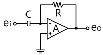
- 부호 변환기
- 전류 증폭기
- 적분기
- 미분기
(정답률: 80%)
6. N형 반도체의 다수 반송자는?
- 정공
- 도너
- 전자
- 억셉터
(정답률: 74%)
7. 주파수가 100[㎒]인 반송파를 3[㎑]의 신호파로 FM 변조했을 때 최대 주파수 편이가 ±15[㎑]이면 변조지수는?
- 3
- 5
- 10
- 15
(정답률: 63%)
8. 굵기가 균일한 전선의 단면적이 S[m2]이고, 길이가 ℓ[m]인 도체의 저항은 몇[Ω]인가? (단, ρ는 도체의 고유저항이다.)
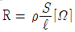
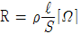
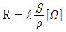
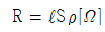
(정답률: 75%)
9. 10[V]의 전압이 100[V]로 증폭되었다면 증폭도는?
- 20[㏈]
- 30[㏈]
- 40[㏈]
- 50[㏈]
(정답률: 64%)
10. 반도체 소자 중 정전압회로에서 전압조절(VR)과 같은 동작 특성을 갖는 것은?
- 서미스터
- 바리스터
- 제너다이오드
- 트랜지스터
(정답률: 70%)
11. 크로스오버 일그러짐은 어디에서 생기는 증폭방식 인가?
- A급
- B급
- C급
- AB급
(정답률: 72%)
12. 시미트 트리거 회로의 입력에 정현파를 넣었을 경우 출력파형은?
- 톱니파
- 삼각파
- 정현파
- 구형파
(정답률: 63%)
13. 트랜지스터의 컬렉터 역포화 전류가 주위온도의 변화로 12[㎂]에서 112[㎂]로 증가되었을 때 컬렉터 전류의 변화가 0.71[㎃]이었다면 이 회로의 안정도계수는?
- 1.2
- 6.3
- 7.1
- 9.7
(정답률: 62%)
14. 그림의 회로에서 결합계수가 k일 때 상호인덕턴스 M은?
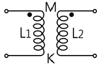
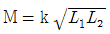
- k=kL1L2
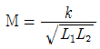
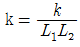
(정답률: 71%)
15. 최대값이 Im[A]인 전파정류 정현파의 평균값은?
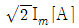
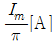
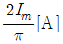
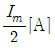
(정답률: 62%)
2과목: 전자계산기일반
16. 펄스의 주기 등은 일정하고 그 진폭을 입력 신호전압에 따라 변화시키는 변조방식은?
- PAM
- PFM
- PCM
- PWM
(정답률: 64%)
17. 데이터의 입·출력 전송이 중앙처리장치의 간섭 없이 직접 메모리 장치와 입·출력 장치사이에서 이루어지는 인터페이스는?
- DMA
- FIFO
- 핸드쉐이킹
- I/O 인터페이스
(정답률: 73%)
18. 기억장치의 성능을 평가할 때 가장 큰 비중을 두는 것은?
- 기억장치의 용량과 모양
- 기억장치의 크기와 모양
- 기억장치의 용량과 접근속도
- 기억장치의 모양과 접근속도
(정답률: 89%)
19. 데이터 전송 속도의 단위는?
- bit
- byte
- baud
- binary
(정답률: 63%)
20. 누산기(accumulator)에 대한 설명으로 올바른 것은?
- 상태 신호를 발생시킨다.
- 제어 신호를 발생시킨다.
- 주어진 명령어를 해독한다.
- 연산의 결과를 일시적으로 기억한다.
(정답률: 88%)
21. 마이크로컴퓨터에서 오퍼랜드가 존재하는 기억장치의 어드레스를 명령 속에 포함시켜 지정하는 주소지정방식은?
- 직접 어드레스 지정방식
- 이미디어트 어드레스 지정방식
- 간접 어드레스 지정방식
- 레지스터 어드레스 지정방식
(정답률: 51%)
22. 가상기억장치(virtual memory)에서 주기억장치의 내용을 보조기억장치로 전송하는 것을 무엇이라 하는가?
- 로드(Load)
- 스토어(Store)
- 롤아웃(Roll-out)
- 롤인(Roll-in)
(정답률: 55%)
23. 다음 중 8421 코드는?
- BCD 코드
- Gray 코드
- Biquinary 코드
- Excess-3 코드
(정답률: 78%)
24. 명령어의 기본적인 구성요소 2가지를 옳게 짝지은 것은?
- 기억장치와 연산장치
- 오퍼레이션 코드와 오퍼랜드
- 입력장치와 출력장치
- 제어장치와 논리장치
(정답률: 75%)
25. 비가중치 코드이며 연산에는 부적합하지만 어떤 코드로부터 그 다음의 코드로 증가하는데 하나의 비트만 바꾸면 되므로 데이터의 전송, 입·출력 장치 등에 많이 사용되는 코드는?
- BCD 코드
- Gray 코드
- ASCII 코드
- Excess-3 코드
(정답률: 66%)
26. 다음 논리회로에서 출력이 0이 되려면, 입력 조건은?
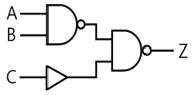
- A=1, B=1, C=1
- A=1, B=1, C=0
- A=0, B=0, C=0
- A=0, B=1, C=1
(정답률: 63%)
27. 컴퓨터 회로에서 Bus Line을 사용하는 가장 큰 목적은?
- 정확한 전송
- 속도 향상
- 레지스터 수의 축소
- 결합선 수의 축소
(정답률: 68%)
28. 단항(Unary) 연산을 행하는 것은?
- OR
- AND
- SHIFT
- 4칙 연산
(정답률: 66%)
29. 저항 2[㏀]에서 소비되는 전력이 1[W] 이내로 하기 위해서 전류는 약 몇 [㎃] 이내로 되어야 하는가?
- 20.4[㎃]
- 22.4[㎃]
- 26.2[㎃]
- 30.5[㎃]
(정답률: 63%)
30. 표준신호발생기(SSG)가 갖추어야 할 조건으로 옳지 않은 것은?
- 불필요한 출력을 내지 않을 것
- 출력 임피던스가 크고, 가변적일 것
- 주파수가 정확하고, 파형이 양호할 것
- 변조도가 자유롭게 조절 될 수 있을 것
(정답률: 79%)
3과목: 전자측정
31. 고주파 전력을 측정하는 방법 중 콘덴서를 사용하여 부하전력의 전압 및 전류에 비례하는 양을 구하고, 열전쌍의 제곱 특성을 이용하여 부하 전력에 비례하는 직류 전류를 가동코일형 계기로 측정하도록 한 전력계는?
- C-C형 전력계
- C-M형 전력계
- 볼로미터 전력계
- 의사 부하법
(정답률: 57%)
32. 다음 중 흡수형 주파수계의 설명으로 옳지 않은 것은?
- 50[㎒] 정도의 고주파 측정에 사용할 수 있다.
- 직렬공진 회로의 공진주파수는
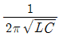
이다. - 공진회로의 Q가 크지 않을 때에는 공진점을 찾기가 쉬워 정밀한 측정이 가능하다.
- 저항, 인덕턴스, 커패시턴스 등을 직렬로 연결시킨 직렬공진회로의 주파수 특성을 이용한 것이다.
(정답률: 63%)
33. 무부하시 단자전압이 100[V]이고, 부하가 연결 됐을 때 단자전압이 80[V]이면, 이때의 전원 전압변동률은?
- 15[%]
- 20[%]
- 25[%]
- 35[%]
(정답률: 58%)
34. 수신기에 관한 측정 중 주파수 특성 및 파형의 일그러짐률에 관계되는 것은?
- 감도 측정
- 선택도의 측정
- 충실도의 측정
- 명료도의 측정
(정답률: 66%)
35. 가청 주파수의 측정에 사용되는 것이 아닌 것은?
- 빈 브리지
- 공진 브리지
- 캠벌 브리지
- 동축 주파수계
(정답률: 59%)
36. 표본화된 연속적인 샘플값을 디지털 양으로 하기 위해서 소구간으로 분할하여 유한의 자리수를 가지는 수치를 할당 하는 것은?
- 표본화
- 구체화
- 부호화
- 양자화
(정답률: 64%)
37. 직동식 기록계기의 동작 원리 방식은?
- 영위법
- 편위법
- 치환법
- 반경법
(정답률: 53%)
38. 다음 중 정전용량의 측정에 적합한 브리지는?
- 셰링브리지
- 휘스톤브리지
- 콜리우슈브리지
- 켈빈더블브리지
(정답률: 67%)
39. 전류계의 측정범위를 넓히기 위해서 계기와 병렬로 연결해주는 저항을 무엇이라 하는가?
- 분류기저항
- 분압기저항
- 전류저항
- 전압저항
(정답률: 65%)
40. 오실로스코프로 측정할 수 없는 것은?
- 교류전압
- 주파수
- 위상차
- 코일의 Q
(정답률: 71%)
41. 전자냉동은 무슨 효과를 이용한 것인가?
- 지벡 효과(Seebeck effect)
- 톰슨 효과(Thomson effect)
- 펠티어 효과(Peltier effect)
- 줄 효과(Joule effect)
(정답률: 84%)
42. 다음 중 태양전지를 연속적으로 사용하기 위하여 필요한 장치는?
- 변조장치
- 정류장치
- 검파장치
- 축전장치
(정답률: 84%)
43. 비스므스(Bi)와 안티몬(Sb)을 접합하여 전류를 흘리면 접촉점에서 흡열 또는 발열 현상이 일어난다. 다음 중 이와 관계있는 것은?
- 줄 효과(Joule effect)
- 핀치 효과(Pinch effect)
- 톰슨 효과(Thomson effect)
- 펠티어 효과(Peltier effect)
(정답률: 73%)
44. 변위신호가 가해지면 출력단자에는 변위에 비례한 크기를 가진 교류신호가 나오는 것은?
- 리졸버
- 저항식 서보기구
- 차동변압기
- 싱크로
(정답률: 57%)
45. 계기 착륙 방식이라고도 하며 로컬라이저, 클라이드 패스 및 팬 마커로 구성되는 것은?
- ILS
- NDB
- VOR
- DME
(정답률: 75%)
4과목: 전자기기 및 음향영상기기
46. 항공기나 선박이 전파를 이용하여 자기 위치를 탐지할 때 무지향성 비컨 방식이나 호밍 비컨 방식을 이용하는 항법은?
- 쌍곡선 항법
- ρ-θ 항법
- 방사상 항법[1]
- 방사상 항법[2]
(정답률: 66%)
47. VTR에 사용되는 자기테이프에 기록되는 신호의 파장을 λ[㎝], 자기테이프 주행속도를 V[㎝/sec], 신호의 주파수를 f[㎐]라 할 때 이들의 관계식으로 옳은 것은?
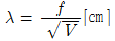
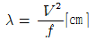
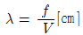
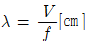
(정답률: 52%)
48. 그림과 같은 회로의 1차측에서 본 임피던스 Zp를 구하는 식은?
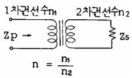
- Zp=nZs
- Zp=n2Zs
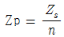
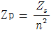
(정답률: 49%)
49. 다음 중 초음파의 성질에 대한 설명으로 옳은 것은?
- 지향성은 진동수가 많을수록 작아진다.
- 기체나 액체 중에서는 종파로 전파된다.
- 감쇠율은 고체, 액체, 기체 순으로 작아진다.
- 특성 임피던스가 같은 물질의 경계면에서 반사 및 굴절을 한다.
(정답률: 51%)
50. 유전가열의 특징으로 옳지 않은 것은?
- 가열이 골고루 된다.
- 전원을 끌 때 과열이 적다.
- 표면 손상이 없다.
- 온도 상승이 늦다.
(정답률: 61%)
51. 디지털 오디오 테이프란 디지털 오디오 신호를 저장하기 위한 테이프 형식이다. 3가지 샘플링 주파수[㎑]가 아닌 것은?
- 32[㎑]
- 44.1[㎑]
- 48[㎑]
- 55[㎑]
(정답률: 47%)
52. 초음파 측심기로 수심을 측정하고자 초음파를 발사 하였다. 이 때 물의 깊이(h)를 계산하는 식은 어떻게 되는가? (단, 물속에서의 초음파 속도는 v[m/s], 초음파가 발사된 후 다시 돌아올 때까지의 시간은 t[sec]이다.)
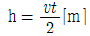
- h = vt[m]
- h = 2vt[m]
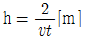
(정답률: 72%)
53. 컬러 TV 수상기에서 특정 채널만이 흑백으로 나올 때의 고장은?
- 위상검파 회로 불량
- 컬러킬러의 동작상태 불량
- 국부발진기 세밀조정 불량
- 3.58[㎑] 발진 주파수의 발진 정지
(정답률: 57%)
54. 무선 수신기의 공중선 회로를 밀 결합했을 때, 생길 수 있는 현상은?
- 발진을 일으킨다.
- 동조점이 2개 나온다.
- 내부잡음이 많아진다.
- 영상혼신이 없어진다.
(정답률: 58%)
55. 자기 녹음기의 교류 바이어스에 사용되는 주파수는?
- 약 60~100[㎐]
- 약 100~200[㎐]
- 약 30~200[㎑]
- 약 200~2000[㎑]
(정답률: 70%)
56. 다음 중 VOR의 설명으로 옳지 않은 것은?
- AN레인지 비컨보다 정밀도가 높다.
- VHF를 사용한 전방향식 AN레인지 비컨이다.
- 사용 주파수는 108~118[㎒]의 초단파를 사용한다.
- 일종의 라디오 비컨으로 90º의 방향에서는 항공기와 수신하고 다른 90º 방향에서는 비행 코스를 알려준다.
(정답률: 45%)
57. 전자현미경에서 배기장치(펌프)가 필요한 이유는?
- 시료를 압축하기 위해서
- 전자렌즈의 압력을 높이기 위해서
- 현미경 내부를 진공으로 하기 위해서
- 전자빔을 한 곳으로 집중시키기 위해서
(정답률: 61%)
58. 다음 중 DVD(Digital versatile Disc)의 설명으로 옳지 않은 것은?
- 콤팩트디스크와 같은 지름의 디스크에 고화질의 정보를 저장할 수 있다.
- 광 저장 매체이며 1매의 기록 용량은 일반 CD의 6~8배 정도이다.
- 광원으로는 적외선 반도체 레이저(파장 780nm 정도)를 사용하였다.
- 영상 데이터는 국제표준방식인 MPEG 2로 압축 한다.
(정답률: 55%)
59. 변위 - 임피던스 변환기에 해당하지 않는 것은?
- 스프링
- 슬라이드 저항
- 용량형 변환기
- 유도형 변환기
(정답률: 67%)
60. 다음 중 초음파를 이용한 것이 아닌 것은?
- 기포를 발생시킨다.
- 급속 냉동에 이용한다.
- 물건의 세척에 이용한다.
- 용접한 곳의 균열을 검사한다.
(정답률: 67%)